flowchart LR
A["WAV mono · 66150 muestras"] --> B["Modelo NDDR-MTL"]
B --> C["42 logits"]
C --> D["42 probabilidades"]
D --> E["Vector multietiqueta"]
Del audio amazónico a 42 decisiones con NDDR-MTL
Un clip real de tres segundos de la Amazonía
Escucha antes de avanzar: ¿cuántos animales distinguirías?
Etiquetas reales: el clip contiene dos especies: DENMIN y LEPPOD.
El reto no es escoger una sola respuesta, sino detectar todas las especies que pueden solaparse en el mismo audio.
42 especies
3 s por clip
22.05 kHz audio mono
No es clasificación multiclase: las etiquetas no son mutuamente excluyentes.
flowchart LR
A["WAV mono · 66150 muestras"] --> B["Modelo NDDR-MTL"]
B --> C["42 logits"]
C --> D["42 probabilidades"]
D --> E["Vector multietiqueta"]
Entrenamiento
Test
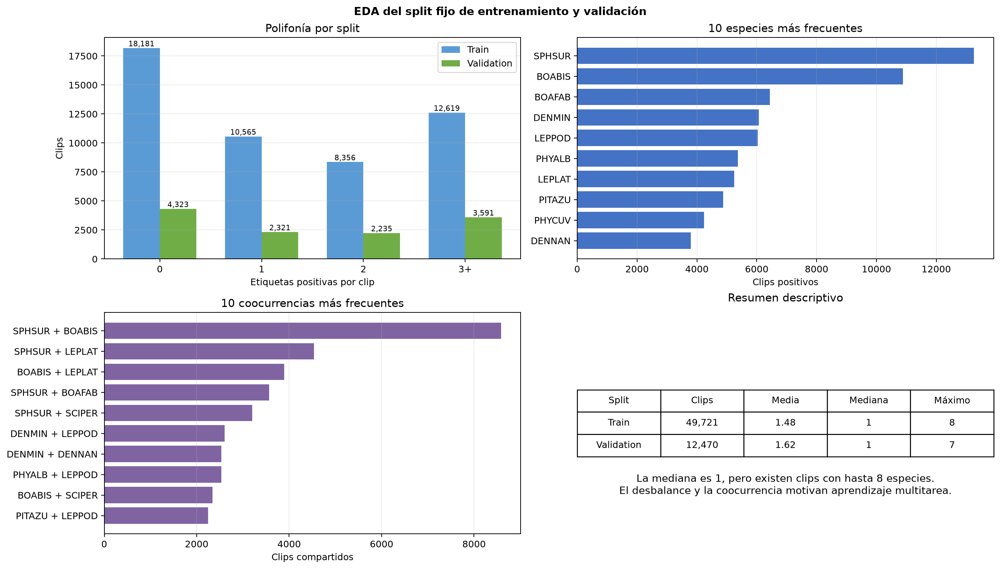
Distribución de etiquetas, clases frecuentes, coocurrencias y resumen descriptivo del split.
Hay muchos clips vacíos, pero también 16,210 clips con tres o más etiquetas. La coocurrencia SPHSUR + BOABIS aparece 8,582 veces: las tareas no son independientes y pueden beneficiarse de compartir información.
Dos extremos
Ambos extremos pueden perder eficiencia o especialización.
NDDR-MTL
La propuesta central no es solo una CRNN: es el intercambio controlado entre rutas específicas mediante capas NDDR.
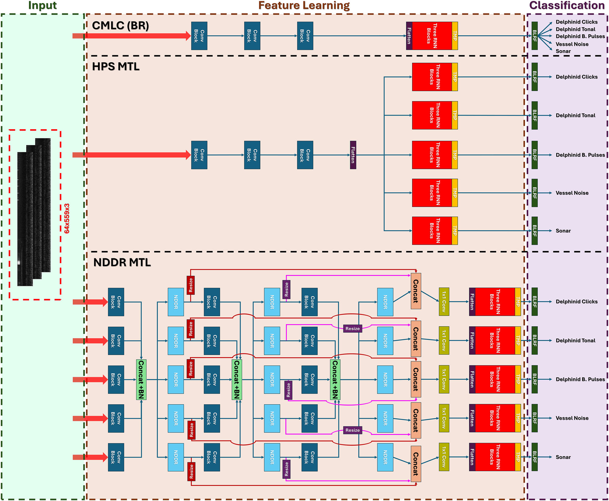
Fig. 8. CMLC/BR usa una CRNN convencional; HPS-MTL comparte el extractor CNN y separa las rutas recurrentes; NDDR-MTL mantiene rutas específicas e intercambia características mediante capas NDDR y shortcuts. Fuente: Olcay et al. (2026), doi:10.1038/s44384-026-00060-x.
flowchart LR
A["WAV · B × 66150"] --> B["STFT · FFT 512, hop 128"]
B --> C["Banco Mel · 64 bandas"]
C --> D["PCEN"]
D --> E["3 canales · B × 3 × 64 × 513"]
La cantidad de frames es:
\[ T=\left\lfloor\frac{66150-512}{128}\right\rfloor+1=513. \]
PCEN estabiliza variaciones lentas de energía y realza eventos acústicos sobre ruido de fondo. La ablación reemplaza PCEN por log-Mel.
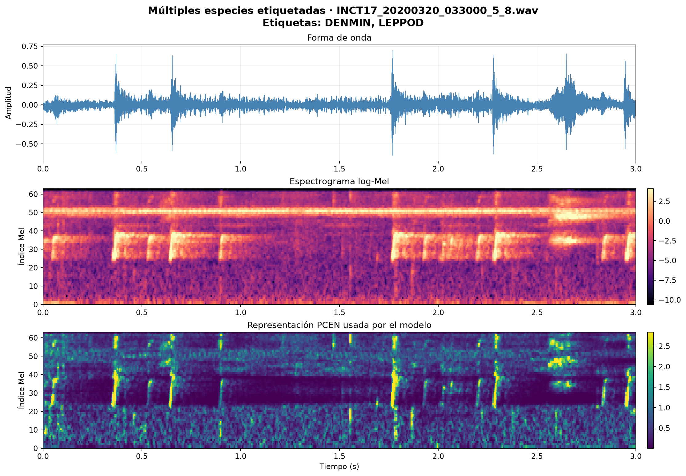
Comparación de forma de onda, log-Mel y PCEN para un clip etiquetado con DENMIN y LEPPOD.
Etiquetas: DENMIN y LEPPOD. PCEN atenúa cambios lentos de energía y resalta eventos locales; el modelo recibe el tensor PCEN, no este archivo PNG.
flowchart LR
A["PCEN input"] --> B["42 CNN 1 · 3→4"]
B --> C["NDDR 1 · 168→4"]
C --> D["42 CNN 2 · 4→4"]
D --> E["NDDR 2 · 168→4"]
E --> F["42 CNN 3 · 4→4"]
F --> G["NDDR 3 · 168→4"]
C -.-> H["Resize + skip fusion"]
E -.-> H
G -.-> H
H --> I["3 BiGRU por especie"]
I --> J["Temporal max pooling"]
J --> K["42 logits"]
42 rutas específicas, tres puntos de intercambio NDDR y shortcuts desde las tres profundidades convolucionales.
flowchart LR
A["Entrada de la rama"] --> B["Conv 5×5 · padding 2"]
B --> C["BatchNorm"]
C --> D["ReLU"]
D --> E["MaxPool 2D"]
E --> F["Dropout2d · 0.25"]
| Etapa | Canales | Pooling | Salida por especie |
|---|---|---|---|
| CNN 1 | \(3\to4\) | \((5,1)\) | \(B\times4\times12\times513\) |
| CNN 2 | \(4\to4\) | \((4,1)\) | \(B\times4\times3\times513\) |
| CNN 3 | \(4\to4\) | \((2,1)\) | \(B\times4\times1\times513\) |
Los pesos de las 42 ramas son independientes. Una grouped convolution solo las ejecuta juntas para aprovechar mejor la GPU.
Paso 1 de 3 · Reunir las representaciones específicas
42 feature maps
Cada uno: \(B\times4\times F\times T\)
\(\longrightarrow\)
Concatenar canales
\(B\times168\times F\times T\)
Cada rama aporta cuatro canales discriminativos. La concatenación reúne la información de las 42 especies sin mezclarla todavía.
Paso 2 de 3 · Estabilizar la representación conjunta
42 feature maps
Cada uno: \(B\times4\times F\times T\)
\(\longrightarrow\)
Concatenar canales
\(B\times168\times F\times T\)
\(\longrightarrow\)
BatchNorm
168 canales
BN normaliza cada canal concatenado antes de que las tareas intercambien información.
Paso 3 de 3 · Fusionar y recuperar una salida por especie
42 mapas
\(4\) canales cada uno
\(\longrightarrow\)
Concat
\(42\times4=168\)
\(\longrightarrow\)
BatchNorm
168 canales
\(\longrightarrow\)
42 Conv \(1\times1\)
Cada una \(168\to4\)
\(\longrightarrow\)
42 salidas
\(4\) canales cada una
\[ \mathbf{Y}_k=\operatorname{Conv}^{(k)}_{1\times1} \left(\operatorname{BN}\left( \operatorname{Concat}(\mathbf{X}_1,\ldots,\mathbf{X}_{42}) \right)\right). \]
Cada Conv \(1\times1\) aprende cómo fusionar todas las especies para reconstruir la representación de una tarea concreta, sin cambiar frecuencia ni tiempo.
Para tres tareas con dos canales, la proyección de la tarea A comienza como:
\[ \mathbf{W}_A= \left[ 0.6\mathbf{I}_2\mid0.2\mathbf{I}_2\mid0.2\mathbf{I}_2 \right] = \begin{bmatrix} 0.6&0&0.2&0&0.2&0\\ 0&0.6&0&0.2&0&0.2 \end{bmatrix}. \]
Para las 42 especies:
\[ w_{\mathrm{cross}}= \frac{1-0.6}{42-1}=\frac{0.4}{41}\approx0.009756. \]
flowchart TD
A["NDDR 1 · B × 4 × 12 × 513"] --> D["Bilinear · frecuencia 12→1"]
B["NDDR 2 · B × 4 × 3 × 513"] --> E["Bilinear · frecuencia 3→1"]
C["NDDR 3 · B × 4 × 1 × 513"] --> F["Sin resize"]
D --> G["Concat por especie · B × 12 × 1 × 513"]
E --> G
F --> G
G --> H["BN + Conv 1×1 · 12→4"]
Inicialización de la fusión:
\[ \mathbf{W}^{\mathrm{skip}}_k= \left[0.2\mathbf{I}_4\mid0.2\mathbf{I}_4\mid0.6\mathbf{I}_4\right]. \]
Se enfatiza la información reciente sin descartar características tempranas.
flowchart LR
A["B × 4 × 1 × 513"] --> B["Flatten por frame · B × 513 × 4"]
B --> C["BiGRU 1 · 16 por dirección"]
C --> D["BiGRU 2 · 16 por dirección"]
D --> E["BiGRU 3 · 16 por dirección"]
E --> F["Max temporal · B × 16"]
F --> G["Linear 16→1"]
BCEWithLogitsLoss incorpora sigmoid durante entrenamiento; en inferencia se aplica torch.sigmoid para obtener probabilidades.
| Componente | Paper | Implementación | Motivo |
|---|---|---|---|
| Número de tareas | 5 | 42 | Especies requeridas |
| Canales CNN | 64 | 4 | NDDR crece con \(K^2C^2\) |
| GRU por dirección | 128 | 16 | 126 BiGRU específicas |
| Inicialización externa | 0.1 | \(0.4/41\) | Preservar suma inicial 1 |
| Batch size | 16 | 64 | Aprovechar RTX A2000 |
| Sample rate | 96 kHz | 22.05 kHz | Dataset del laboratorio |
| FFT / hop | 2048 / 512 | 512 / 128 | Misma escala temporal aproximada |
Conservamos la topología NDDR-MTL; reducimos su ancho para hacer viable el salto de 5 a 42 rutas específicas.
Los clips son ventanas solapadas de grabaciones más largas:
Una división aleatoria por clip filtraría audio casi idéntico a validación.
flowchart LR
A["Obtener grabación original"] --> B["GroupShuffleSplit · 4096 candidatos"]
B --> C["Verificar soporte por especie"]
C --> D["Train 80% · 49721 clips"]
C --> E["Validation 20% · 12470 clips"]
Semilla: 42 · Ninguna grabación original aparece en ambos conjuntos.
Scheduler exponencial staircase:
\[ \operatorname{lr}(s)=0.001(0.75)^{\left\lfloor s/388\right\rfloor}. \]
777 pasos por época; decay cada 388 pasos, aproximadamente media época.
| Sistema | Qué representa | Pregunta que responde |
|---|---|---|
| Baseline de ceros | Sanity check; no es una red neuronal | ¿Qué ocurre si siempre predecimos ausencia? |
| NDDR-MTL + PCEN | Modelo del paper adaptado a 42 especies | ¿Cómo funciona el método principal? |
| NDDR-MTL + log-Mel | Ablación de la representación | ¿Qué cambia al retirar PCEN? |
Los dos modelos NDDR comparten arquitectura, split, semilla, Adam, batch y 100 épocas. Solo cambia PCEN frente a log-Mel, por lo que la comparación aísla la representación de entrada.
0.55069 mAP log-Mel
0.69797 micro F1
0.46905 macro F1
0.43561 exact match
El modelo supera claramente al baseline de ceros, cuyo mAP es 0.04143 y micro F1 es cero.
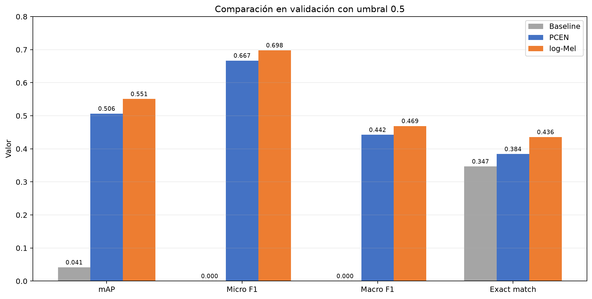
Comparación de NDDR-MTL con PCEN, log-Mel y el baseline de ceros.
Log-Mel supera a PCEN en 0.04428 mAP, 0.03113 micro F1 y 0.05148 exact match.
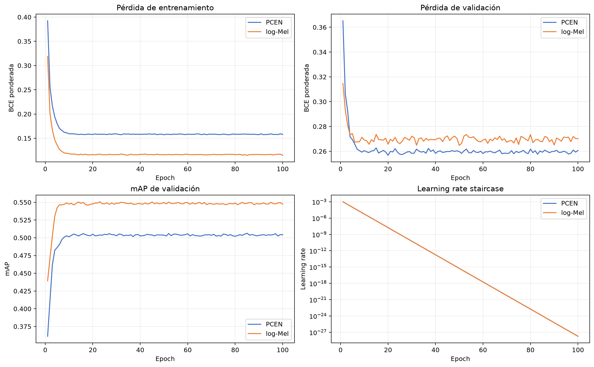
Curvas de entrenamiento, validación, mAP y learning rate.
Ambos modelos convergen temprano. El decay aplicado dos veces por época lleva el learning rate casi a cero mucho antes del epoch 100; un scheduler más lento es una mejora futura importante.
Resultado agregado
| Entrada | mAP | Micro F1 |
|---|---|---|
| PCEN | 0.50641 | 0.66684 |
| log-Mel | 0.55069 | 0.69797 |
Log-Mel mejora mAP aproximadamente 8.7 % de forma relativa.
El efecto depende de la especie
Mayores ganancias de AP:
Mayores pérdidas:
PCEN no mejora el promedio de este dataset, pero sí beneficia a algunas especies concretas.
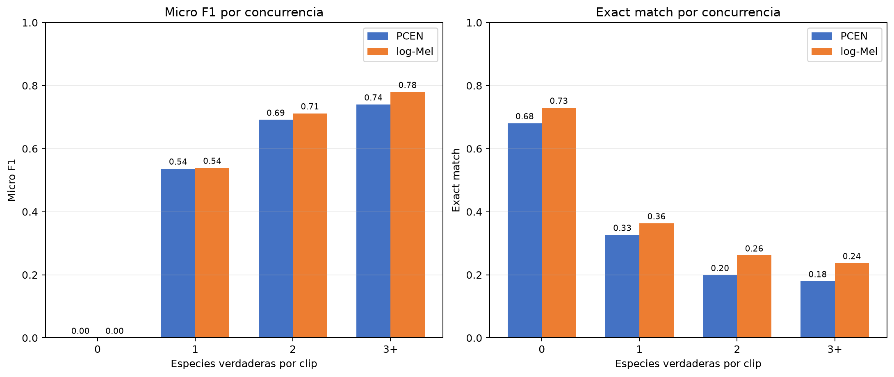
Micro F1 y exact match según el número de especies verdaderas.
Exact match cae porque exige acertar simultáneamente las 42 decisiones: una sola inserción u omisión invalida todo el clip.
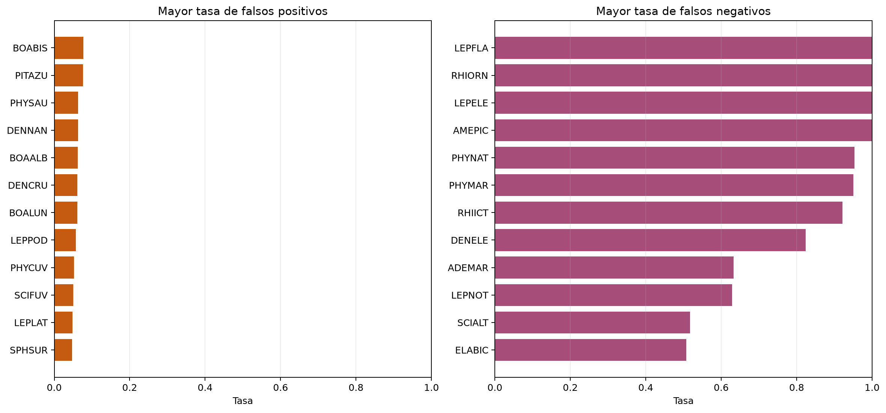
Especies con mayores tasas de falsos positivos y negativos.
Los FN de 100 % corresponden principalmente a clases muy raras. PHYNAT es más preocupante: se omiten 203 positivos, equivalentes a 95.31 %.
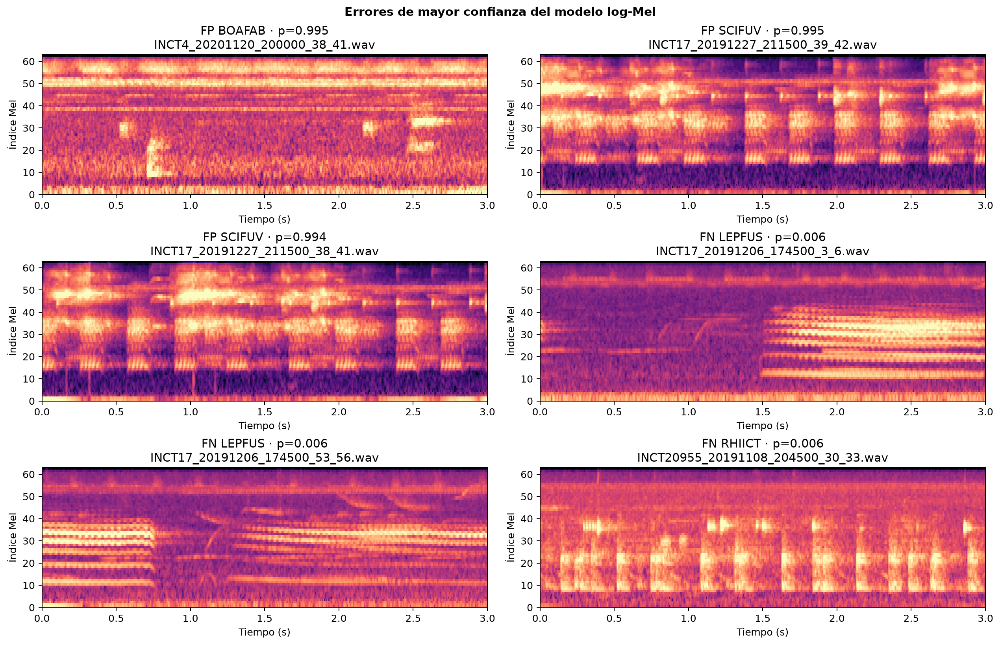
Espectrogramas log-Mel de errores de mayor confianza.
Dos FP pertenecen a ventanas consecutivas de una grabación, lo que sugiere confusión sistemática o posibles omisiones de etiquetado en ese caso. Un espectrograma por sí solo no permite atribuir la causa definitiva.
flowchart LR
A["Best log-Mel · epoch 23"] --> B["31,187 WAV de test"]
B --> C["42 probabilidades por clip"]
C --> D["Umbral 0.5"]
D --> E["test_predictions.csv"]
test_probabilities.csv permite cambiar el umbral sin repetir inferencia.La representación más compleja no fue la mejor: para este dataset, preservar log-Mel produjo mejores resultados que aplicar PCEN.
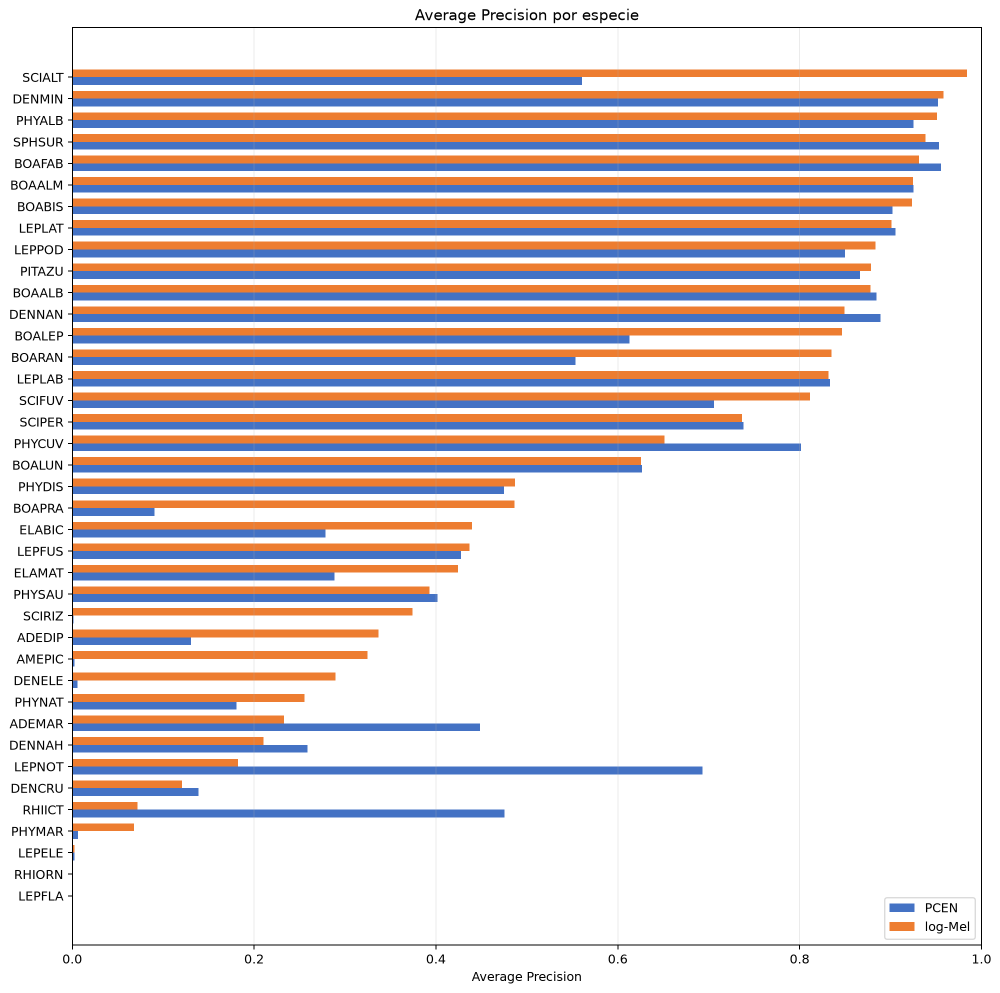
Average Precision por especie para PCEN y log-Mel.
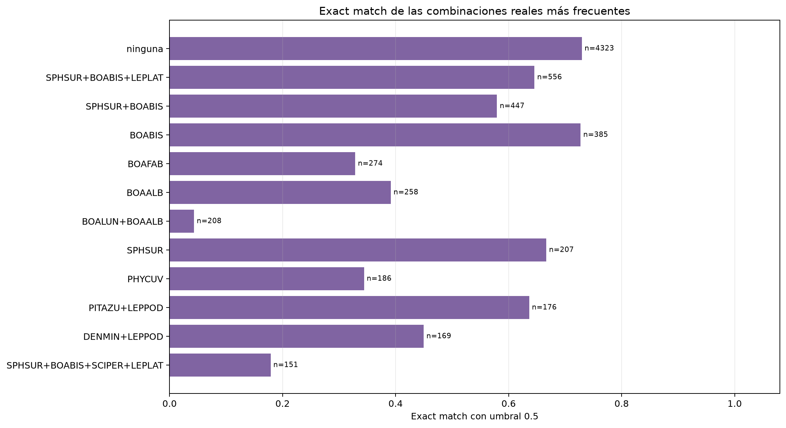
Exact match de las combinaciones verdaderas más frecuentes.
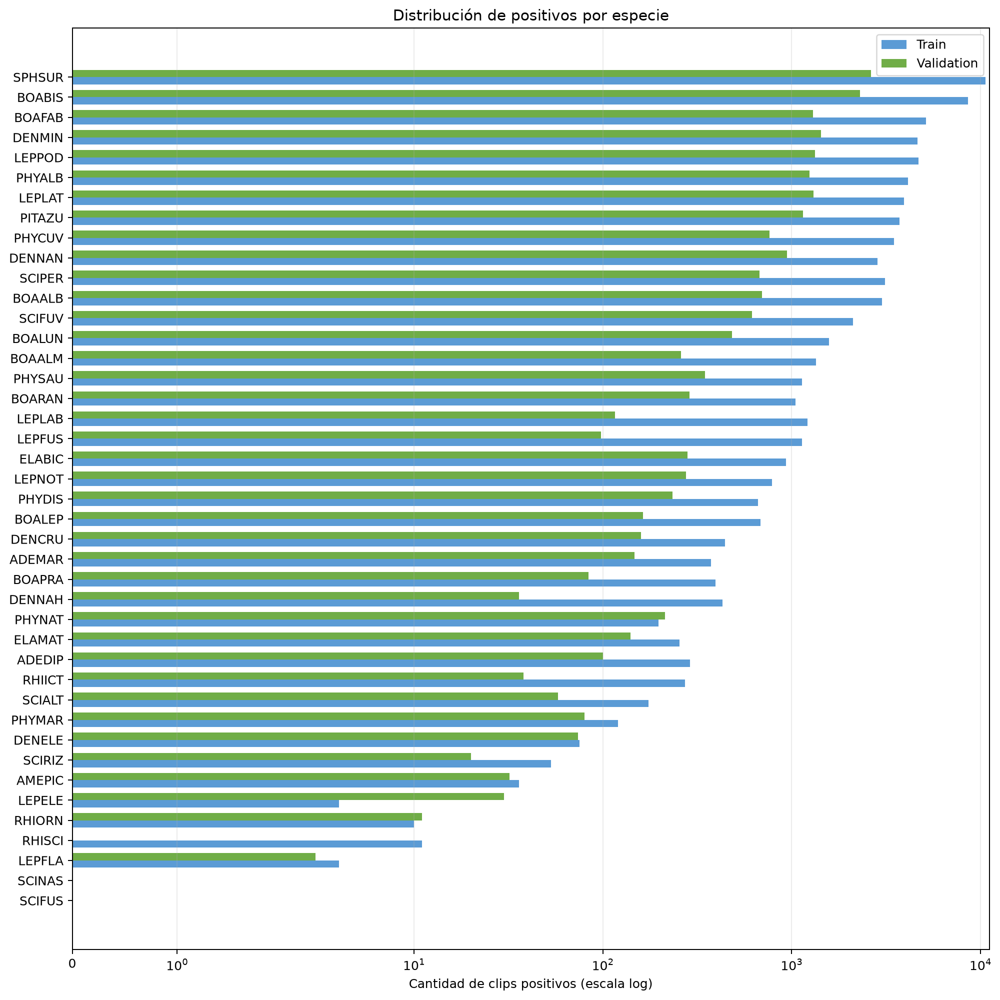
Cantidad de positivos por especie en train y validación.
| Etapa | Forma por especie | Forma concatenada |
|---|---|---|
| Frontend PCEN | — | \(B\times3\times64\times513\) |
| CNN / NDDR 1 | \(B\times4\times12\times513\) | \(B\times168\times12\times513\) |
| CNN / NDDR 2 | \(B\times4\times3\times513\) | \(B\times168\times3\times513\) |
| CNN / NDDR 3 | \(B\times4\times1\times513\) | \(B\times168\times1\times513\) |
| Resize | \(3\times(B\times4\times1\times513)\) | — |
| Concat skip | \(B\times12\times1\times513\) | — |
| Fusión skip | \(B\times4\times1\times513\) | — |
| Secuencia GRU | \(B\times513\times4\) | — |
| Cada BiGRU | \(B\times513\times16\) | 42 rutas |
| Temporal max pool | \(B\times16\) | — |
| Clasificador | \(B\times1\) | \(B\times42\) |
Para logits \(z_{ik}\), targets \(y_{ik}\) y pesos positivos \(p_k\):
\[ \mathcal{L}=-\frac{1}{BK}\sum_{i=1}^{B}\sum_{k=1}^{K} \left[p_ky_{ik}\log\sigma(z_{ik})+ (1-y_{ik})\log(1-\sigma(z_{ik}))\right]. \]
\[ p_k=\operatorname{clip}\left( \frac{N_{k,\mathrm{neg}}}{N_{k,\mathrm{pos}}},1,20\right). \]
SCIFUS y SCINAS no tienen positivos en entrenamiento.| Componente | Archivo y símbolo |
|---|---|
| Bloque CNN | src/animal_audio/model.py::_CNNBlock |
| Capa NDDR | src/animal_audio/model.py::_NDDRLayer |
| Ramas CNN | NDDRMTL.cnn_branches |
| Shortcuts | NDDRMTL._initialize_skip_fusion |
| BiGRU y TMP | NDDRMTL.forward |
| BCE y Adam | src/animal_audio/engine.py::train_experiment |
| PCEN / log-Mel | src/animal_audio/features.py::AudioFeatureExtractor |
| Configuración | configs/nddr_pcen.yaml |
Código, reporte y presentación se ejecutan desde el mismo repositorio para mantener trazabilidad entre arquitectura, hiperparámetros y resultados.
NDDR-MTL · Deep Learning UTEC